05 · Menú TPV
El menú TPV es el punto de venta para la venta al detalle en tienda: cobrar a clientes de mostrador, emitir tickets/facturas simplificadas, gestionar el efectivo de la caja y cuadrarla (arqueo).
Estructura del menú:
TPV
├── Menú de Caja
├── Listados
│ └── Listado de operaciones de venta
├── Parámetros de Caja
├── Formas de Pago Caja
├── Depósitos de Clientes
├── Histórico de Pagos de Caja
├── Histórico de Vales
├── Histórico de Operaciones
├── Histórico de Arqueos
├── Histórico de Solicitudes de Traspaso
├── Borradores Simplificados
└── Facturas proformaCómo se trabaja una jornada de caja
Una jornada normal de tienda sigue este orden:
- Entrar en TPV ▸ Menú de Caja y seleccionar la empresa, el almacén y la caja física del puesto.
- Revisar la Fecha de Caja. Si se está registrando una jornada atrasada, cambiarla antes de hacer ventas.
- Registrar la Entrada de Cambio (F6) si se mete efectivo inicial o un refuerzo de monedas/billetes.
- Vender desde Ventas (F5), cobrar con F12 y emitir el ticket o el borrador que corresponda.
- Registrar gastos, retiradas, traspasos y devoluciones durante el día.
- Al cierre, abrir Arqueo (F11), contar efectivo y otras formas de pago, grabar el arqueo e imprimir el justificante.
La caja separa tres cosas que conviene no mezclar:
| Concepto | Qué es | Dónde se revisa |
|---|---|---|
| Operación de caja | Registro de lo que ha ocurrido en el TPV: venta, devolución, gasto, entrada, traspaso o arqueo. | Buscar / Modificar e Histórico de Operaciones. |
| Pago de caja | Movimiento económico asociado a una operación: efectivo, tarjeta, vale, divisa, cripto o crédito. | Fase de cobro e Histórico de Pagos. |
| Documento fiscal | Ticket/borrador simplificado o borrador normal que justifica la venta. | Borradores Simplificados y Facturas/Borradores de venta. |
Para evitar descuadres, una operación de venta no se considera terminada hasta que la fase de cobro se valida. Volver con Esc desde cobro deja el ticket abierto y no graba nada.
Listados
Listado de operaciones de venta
Ruta: TPV ▸ Listados ▸ Listado de operaciones de venta
Genera un informe A4 horizontal con el detalle de las ventas del TPV. El formulario propone desde el 1 de enero del año actual hasta hoy y muestra la empresa, el almacén y la caja activos de la sesión.
Cuando el usuario no está limitado por
appRestringirEmpAlmCaja, aparece la pestaña
Empresas / almacenes / cajas. El TPV activo se marca inicialmente y se
pueden marcar otras ubicaciones para acumularlas en el mismo informe. Los
usuarios restringidos no ven esta pestaña y solo consultan su ubicación.
El informe incluye artículo, color (con un recuadro del color básico definido en Etiquetas), talla, proveedor, modelo, descripción, cantidad, bruto, descuento, neto del artículo, ingresos, vendedor, formas de pago y documento. Los resultados se ordenan por fecha y operación, con totales por caja y por fecha.
Este acceso depende del permiso de menú del perfil. Si TPV ▸ Listados no aparece, el administrador debe habilitarlo en el perfil; como consulta en pantalla puede usarse el Histórico de Operaciones, aunque no sustituye al informe A4.
Menú de Caja
Atajo de menú: [F5]
Es la pantalla principal del TPV, diseñada para trabajar con teclado y rapidez en el mostrador. Muestra la Empresa, la caja activa (empresa/almacén/caja) y la Fecha de Caja de la jornada, junto con el reloj.
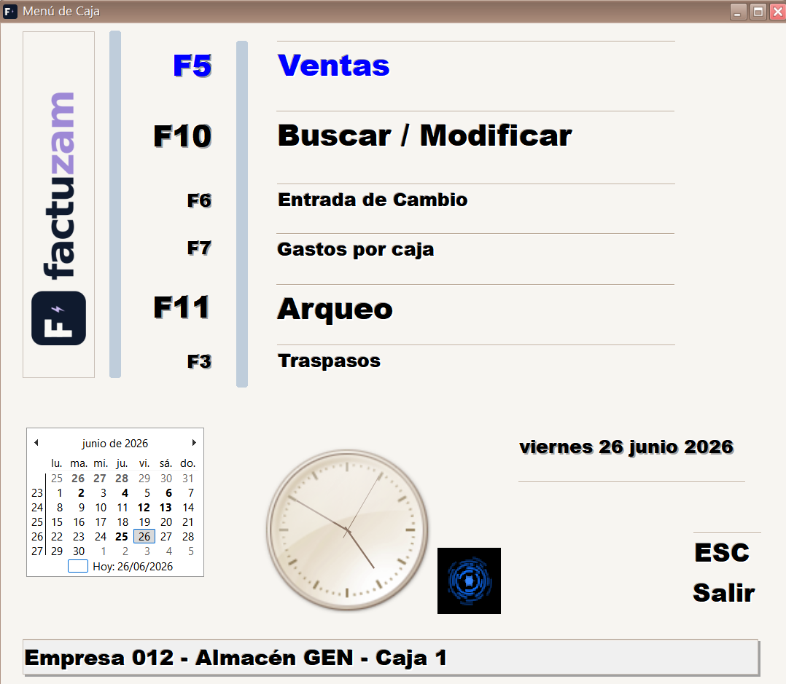
Funciones y sus teclas rápidas:
| Tecla | Función | Descripción |
|---|---|---|
| F3 | Traspasos | Traspaso de mercancía entre almacenes/tiendas (ver detalle más abajo). |
| F5 | Ventas | Pantalla de venta/cobro (ver detalle más abajo). |
| F6 | Entrada de Cambio | Registra el efectivo inicial o un refuerzo de cambio que entra en el cajón. |
| F7 | Gastos por caja | Registra pagos, gastos y retiradas de efectivo desde la caja. |
| F10 | Buscar / Modificar | Localiza operaciones de la caja para consultarlas o modificarlas (ver detalle más abajo). |
| F11 | Arqueo | Cierre y cuadre de caja (ver detalle más abajo). |
| — | Fecha de Caja | Fija/cambia la fecha de trabajo de la jornada. |
| Esc | Salir | Cierra el TPV y vuelve a la ventana principal. |
El TPV está pensado para que un dependiente pueda vender, cobrar y cerrar caja sin usar el resto de menús. Antes de operar debe haber una caja seleccionada (empresa + almacén + caja).
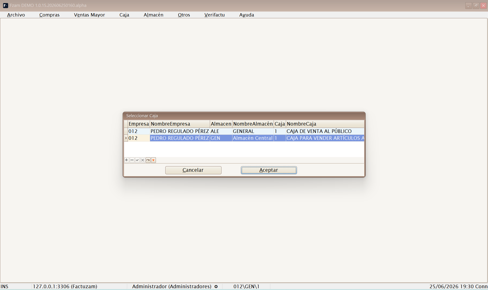
El calendario del menú marca los días con ventas y permite cambiar la fecha de trabajo. La fecha elegida se arrastra a ventas, traspasos, entradas, gastos y arqueos.
Ventas (F5) — la pantalla de venta
Es la pantalla donde se hace el ticket. Arriba se indica el Empleado (vendedor) y, opcionalmente, el Cliente; debajo, la rejilla de líneas de venta y el Total en grande.
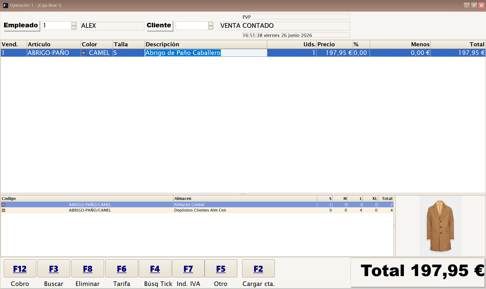
Cómo se añaden líneas:
- Pasando el lector de código de barras por el artículo (la pantalla está optimizada para ráfagas de lector).
- Buscando el artículo manualmente con Buscar (F3).
Cada línea muestra: Vend. (vendedor de la línea), Artículo, Descripción, Color/Talla cuando procede, Uds., Precio, % (descuento), Menos (importe descontado) y Total. Si el artículo tiene foto, se muestra en el panel lateral de stock/foto.
Flujo normal de venta:
- Indica el Empleado. Si el empleado está parametrizado por defecto, la pantalla lo propone automáticamente.
- Indica el Cliente si no es una venta de contado. Para tickets de mostrador se puede dejar como VENTA CONTADO.
- Escanea artículos o búscalos con F3. En artículos con talla/color, el TPV completa o pide el SKU que corresponda.
- Revisa cantidades, descuentos y precio de línea si el usuario tiene permiso para cambiarlos.
- Pulsa F12 Cobro cuando el total sea correcto.
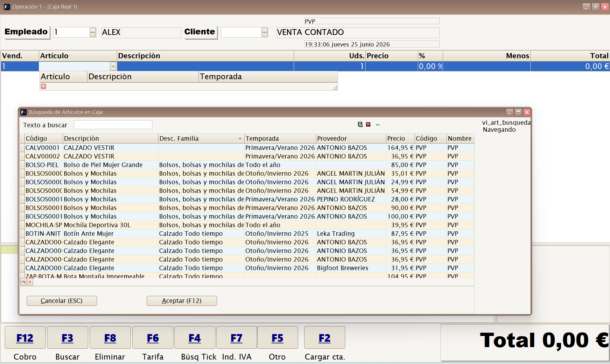
Cliente, cuenta y depósitos:
Si se asigna un cliente, la cabecera de la venta toma sus datos fiscales, tarifa y condiciones. Cuando el cliente tiene depósitos o prendas apartadas, F2 Cargar cta. trae su cuenta de cliente a la venta. Al pulsarlo, el ticket carga:
- Una línea por cada prenda apartada pendiente (con su cantidad pendiente y el precio al que se apartó), marcada para Cobrar.
- Una línea negativa «Abono a cuenta» por cada anticipo ya entregado, que descuenta del total lo que el cliente ya pagó.
La vista cambia al modo cuenta de cliente: aparece la columna Fecha (cuándo se apartó cada prenda) y se ocultan las columnas % y Menos. Mientras tanto se puede seguir escaneando prendas nuevas con normalidad.
Las líneas que vienen de depósito tienen reglas propias:
- No se pueden eliminar (F8) ni sustituir por otra búsqueda (F3).
- Solo se permite cambiar el signo de la cantidad: en negativo la prenda queda marcada para cancelar el depósito (no se cobra la prenda y el anticipo entregado se recupera como saldo a favor en el cobro); de vuelta a positivo, se vuelve a marcar para cobrar.
- Con líneas de depósito en el ticket no se admite descuento global en la fase de cobro.
Con el parámetro Cargar depósitos automáticamente (
vgerAutoLoadDepositos) la cuenta se carga sola al seleccionar el cliente, sin pulsar F2 (ver Parámetros de Caja).
Varias ventas a la vez:
Con F5 Otro se aparca el ticket actual y se abre otra operación. Es útil cuando un cliente sigue mirando o falta confirmar una prenda y hay que atender a otra persona. Se pueden mantener hasta 5 operaciones simultáneas. Antes de cerrar el menú de caja, el programa avisa si queda alguna operación abierta.
Teclas rápidas de la pantalla de Ventas:
| Tecla | Función | Descripción |
|---|---|---|
| F12 | Cobro | Pasa a la fase de cobro del ticket (ver abajo). |
| F3 | Buscar | Busca artículos para añadirlos sin lector. |
| F4 | Búsq Tick | Busca un ticket anterior (p. ej. para una devolución). |
| F5 | Otro | Cambia a otra operación en paralelo: se pueden mantener hasta 5 tickets abiertos a la vez (clientes simultáneos). |
| F6 | Tarifa | Cambia la tarifa de precios aplicada. |
| F7 | Ind. IVA | Cambia el indicador de IVA de la operación. |
| F8 | Eliminar | Elimina la línea seleccionada. |
| F2 | Cargar cta. | Carga los depósitos/a cuenta del cliente para aplicarlos. |
| Ctrl+U | Consulta stock | Consulta el stock del artículo de la línea en foco. |
| Ctrl+E | Búsqueda de datos | Abre la búsqueda avanzada de artículos y SKU. |
| Ctrl+A | Artículos | Abre la consulta de artículos. |
| Esc | Salir | Abandona la operación. |
El botón Búsq Tick (F4) se usa para localizar tickets anteriores, por ejemplo cuando hay que preparar una devolución o revisar una venta ya hecha.
Fase de cobro (F12 desde Ventas)
Tras pulsar Cobro (F12) se entra en la Fase de cobro, donde se liquida el ticket:
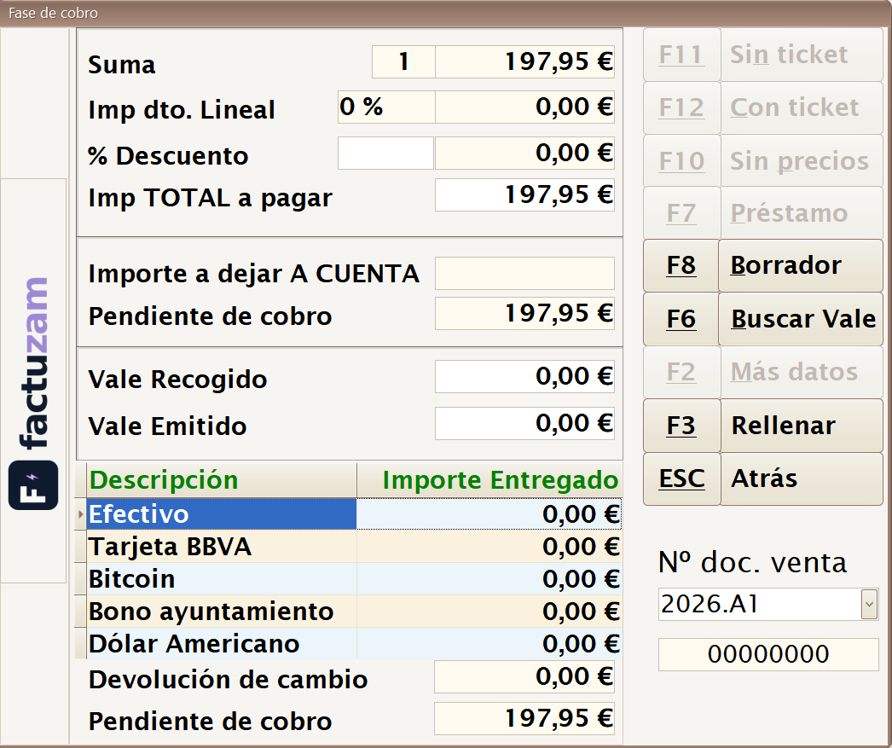
Zona de importes:
- Imp. TOTAL a pagar, con posibilidad de aplicar un % Descuento o un descuento lineal al total.
- Pendiente de cobro — lo que falta por cubrir con formas de pago.
- Importe a dejar A CUENTA — parte que queda como depósito del cliente.
- Vale Emitido / Vale Recogido — vales generados (devoluciones) o canjeados en esta operación.
- Devolución de cambio — cambio a devolver al cliente.
Cobro parcial y depósitos (a cuenta): si el cliente entrega menos del total, la diferencia queda a cuenta y el programa reparte el dinero entregado en este orden:
- Primero a las prendas de depósito ya existentes cargadas con F2: la que no quede pagada del todo aumenta su anticipo con lo entregado.
- Después a las prendas nuevas del ticket: la que no llegue a cubrirse se convierte en un depósito nuevo con lo entregado como anticipo (o con anticipo 0 si ya no queda dinero: la prenda queda simplemente apartada).
Los abonos por devolución del propio ticket y los anticipos de depósitos cancelados cuentan como dinero disponible en ese reparto. Todo queda registrado en Depósitos de Clientes.
Rejilla de pagos: se reparte el total entre una o varias formas de pago (efectivo, tarjeta, vale…), indicando el Importe Entregado de cada una. La aplicación calcula el cambio.
Botones / teclas de la fase de cobro:
| Tecla | Función | Descripción |
|---|---|---|
| F12 | Con ticket | Cierra la venta imprimiendo el ticket. |
| F11 | Sin ticket | Cierra la venta sin imprimir ticket térmico. |
| F10 | Sin precios | Imprime ticket regalo sin precios y conserva el justificante fiscal. |
| F8 | Borrador | Emite borrador normal/factura A4 a nombre del cliente. |
| F7 | Préstamo | Deja el importe pendiente a cuenta del cliente si tiene crédito permitido. |
| F6 | Buscar Vale | Localiza un vale emitido para canjearlo como pago. |
| F3 | Rellenar | Rellena automáticamente el importe pendiente en la forma de pago seleccionada. |
| F2 | Más datos | Datos adicionales de la operación. |
| Esc | Atrás | Vuelve a la pantalla de venta sin cerrar el cobro. |
El Nº de documento de venta generado se muestra al cerrar. Las ventas de caja generan borradores simplificados que se consolidan según el modo fiscal configurado (consultables en Borradores Simplificados).
Formas de pago, cambio y referencias
La rejilla de pagos muestra las formas activas configuradas en Formas de Pago Caja. Se puede cubrir el total con una sola forma o repartir el importe entre varias, por ejemplo efectivo + tarjeta o vale + efectivo.
Rellenar (F3) escribe el pendiente en la forma seleccionada. En efectivo, si el importe entregado supera el pendiente, la pantalla calcula la Devolución de cambio. En formas que no devuelven cambio, el importe debe cuadrar con el pendiente o con la parte que se quiera cobrar.
Cuando una forma de pago pide referencia, usa divisa o cripto, se abre una pantalla auxiliar:
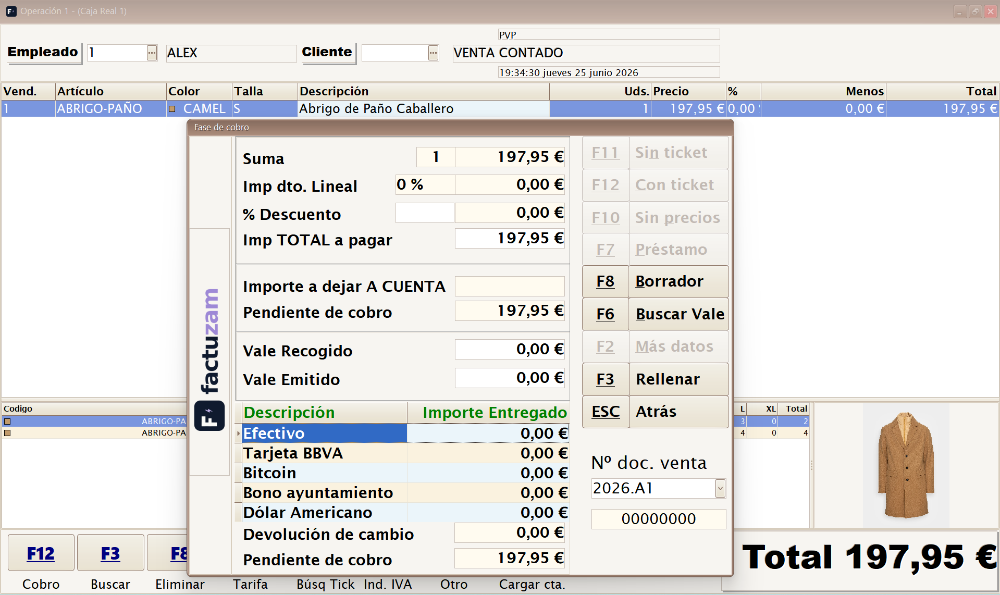
| Caso | Qué se pide |
|---|---|
| Referencia | Número de autorización, bono, localizador o dato que identifique el pago. |
| Divisa | Código de divisa, cotización e importe equivalente. |
| Cripto | Red blockchain y hash de la transacción. |
Vales en caja
Un vale emitido es saldo que se entrega al cliente, normalmente por una devolución o por el sobrante de otro vale. Un vale recogido es un vale que el cliente usa como forma de pago.
Con Buscar Vale (F6) se abre la selección de vales pendientes:
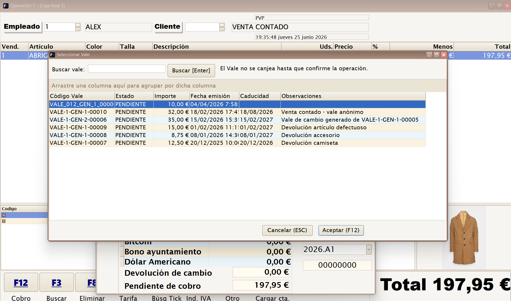
La pantalla muestra Código Vale, Estado, Importe, Fecha de emisión, Caducidad y Observaciones. Si la configuración exige PIN, también se solicita antes de aceptar. El vale no se canjea definitivamente hasta confirmar el cobro.
Si el vale que se recoge es mayor que el pendiente de la venta, la diferencia se registra como Vale Emitido para que el cliente no pierda saldo.
Préstamo (F7) o venta a crédito
El botón Préstamo (F7) no es una forma de pago. Sirve para cerrar una venta dejando el importe pendiente en la cuenta del cliente. En la práctica, la mercancía sale de la tienda y el cliente queda con deuda o crédito pendiente.
Para usarlo deben cumplirse estas condiciones:
| Condición | Motivo |
|---|---|
| Cliente asignado | No se puede dejar deuda a una venta de contado. |
| Cliente con crédito permitido | La ficha del cliente debe permitir cuenta o deuda. |
| Límite suficiente | Si hay límite de crédito, el pendiente no puede superarlo. |
| Importe pendiente | Solo tiene sentido si queda algo sin cubrir por pagos. |
En el arqueo, estas operaciones aparecen separadas como Ventas Préstamos y también afectan a Pendiente cobro. Cuando el cliente pague más adelante, el movimiento quedará como cobro de cliente.
Qué ticket o documento se genera
| Botón | Resultado |
|---|---|
| Con ticket (F12) | Graba la operación, genera el borrador simplificado y manda el ticket a la impresora de caja. |
| Sin ticket (F11) | Graba igual, pero no imprime ticket térmico. Puede abrir cajón si la forma de pago lo permite. |
| Sin precios (F10) | Imprime un ticket regalo sin precios; el documento fiscal completo queda registrado. |
| Borrador (F8) | Genera un borrador normal/A4 con serie y fecha, exige cliente con NIF válido. |
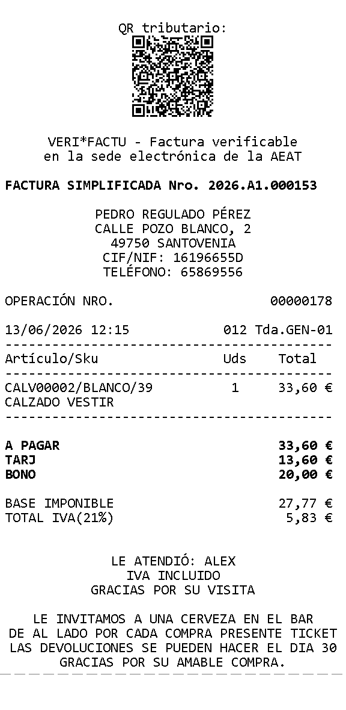
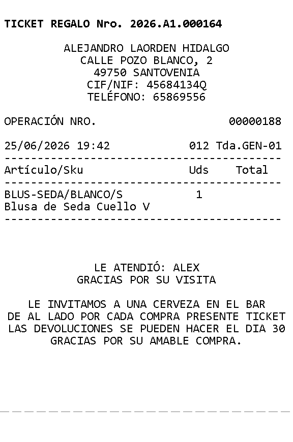
Si el botón Borrador (F8) está bloqueado o avisa, revisa que la venta tenga cliente, NIF/CIF/NIE válido y datos fiscales suficientes.
Traspasos (F3)
Gestiona los traspasos de mercancía entre almacenes (entre tiendas, o tienda ↔ almacén central). El stock sale del almacén origen y entra en el destino.
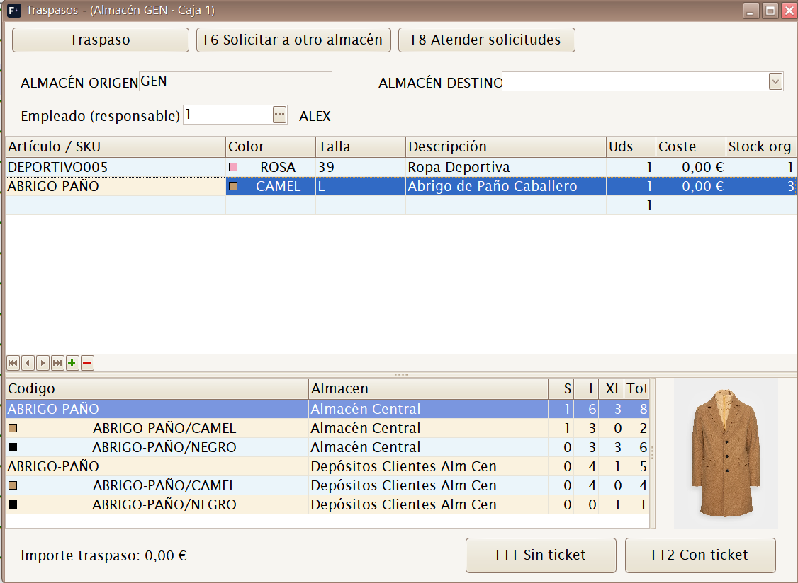
| Elemento | Descripción |
|---|---|
| Almacén origen / Almacén destino | De dónde sale y a dónde va la mercancía. |
| Empleado (responsable) | Quién realiza el traspaso. |
| Líneas de artículos | Se añaden con el lector o búsqueda, igual que en Ventas. |
| Importe traspaso | Valoración de la mercancía traspasada. |
Modos de trabajo:
- F6 — Solicitar a otro almacén: crea una solicitud de género a otra tienda/almacén (pendiente de que la atiendan).
- F7 — Atender solicitudes: muestra las solicitudes recibidas para prepararlas y enviarlas.
- F8 — Borrar línea: elimina la línea seleccionada en los modos Traspaso y Solicitar. Al atender, las líneas solicitadas no se pueden borrar.
Cierre: F12 Con ticket (imprime justificante del traspaso) o F11 Sin ticket.
Traspaso directo
Usa este modo cuando el género sale físicamente del almacén actual y se envía a otro almacén en ese momento.
- Revisa el Almacén origen. Normalmente coincide con el almacén de la caja activa.
- Selecciona el Almacén destino.
- Indica el Empleado responsable.
- Escanea o busca las prendas que salen.
- Cierra con F12 Con ticket si quieres justificante para la bolsa o caja enviada, o con F11 Sin ticket si no hace falta imprimir.
El traspaso no es una venta y no genera cobro. Sí genera trazabilidad de stock: la mercancía deja de estar disponible en el origen y pasa al destino.
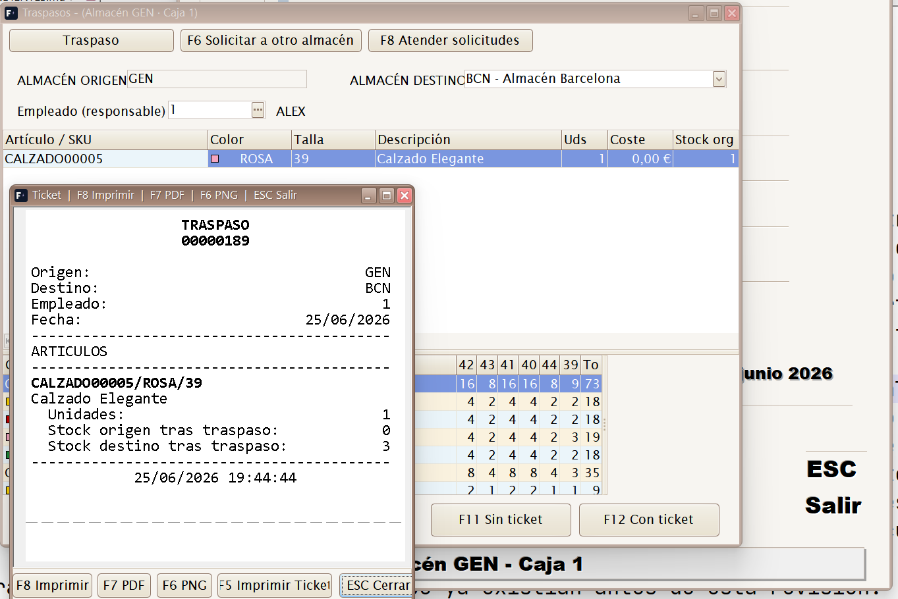
Solicitar a otro almacén (F6)
Se usa cuando una tienda necesita género que está en otra tienda o en almacén central, pero todavía no se está enviando físicamente.
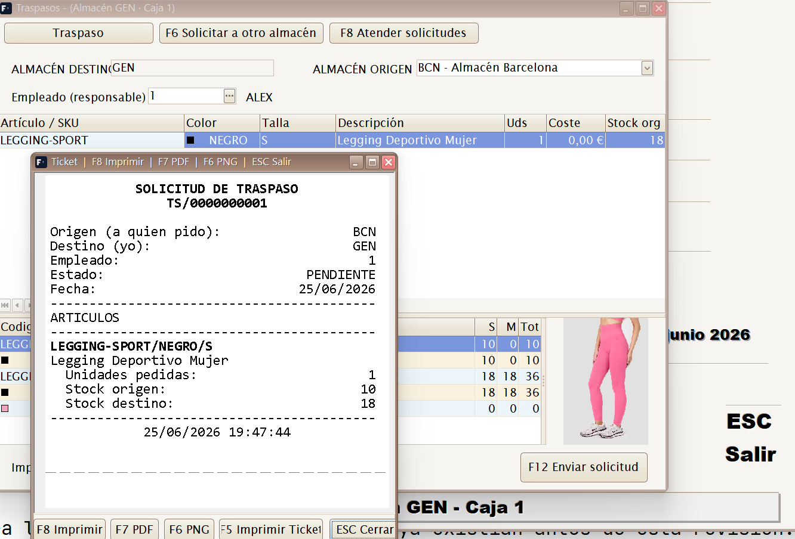
El flujo recomendado es:
- Cambiar al modo F6 Solicitar a otro almacén.
- Seleccionar el almacén al que se solicita la mercancía.
- Añadir artículos y tallas igual que en una venta.
- Guardar la solicitud para que el almacén origen pueda prepararla.
Hasta que se atiende, esta solicitud no debe tratarse como mercancía ya recibida. Sirve para organizar trabajo entre tiendas y evitar llamadas o notas manuales.
Atender solicitudes (F7)
Se usa en el almacén que recibe peticiones de otras tiendas. Permite revisar qué han solicitado, preparar las líneas y cerrar el envío.
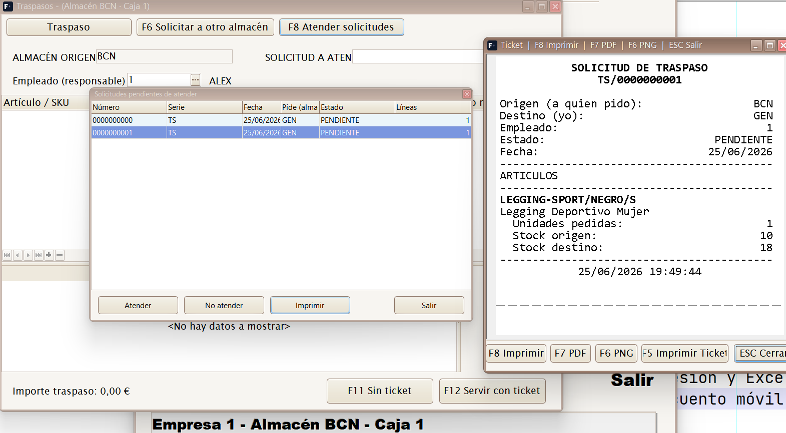
Cuando se atiende una solicitud, conviene imprimir el ticket de traspaso y meterlo con la mercancía. Así la tienda destino puede cotejar lo recibido con el justificante.
Un traspaso mal cerrado afecta directamente al stock. Si hay dudas entre traspaso directo y solicitud, usa solicitud hasta que la mercancía salga de verdad del almacén origen.
Entrada de Cambio (F6)
Registra el efectivo de cambio que se introduce en el cajón al empezar la jornada (o un refuerzo de cambio a mitad de día). Este importe se tiene en cuenta en el arqueo como entrada de efectivo.
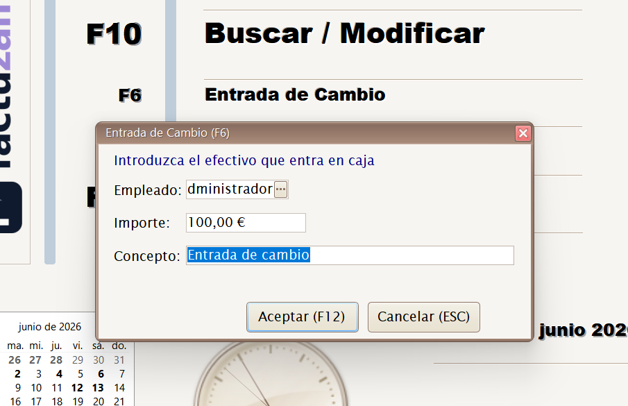
Campos principales:
| Campo | Uso |
|---|---|
| Empleado | Persona que registra o entrega el cambio. |
| Importe | Cantidad de efectivo que entra en la caja. |
| Concepto | Explicación breve: cambio inicial, refuerzo, monedas, etc. |
Se acepta con F12 y se cancela con Esc. En el arqueo aparece como Efectivo entradas, por lo que aumenta el efectivo esperado en caja.
Gastos por caja (F7)
Registra pagos en efectivo hechos desde el cajón (mensajería, compras menores…). Restan efectivo en el arqueo y quedan en el histórico de pagos.
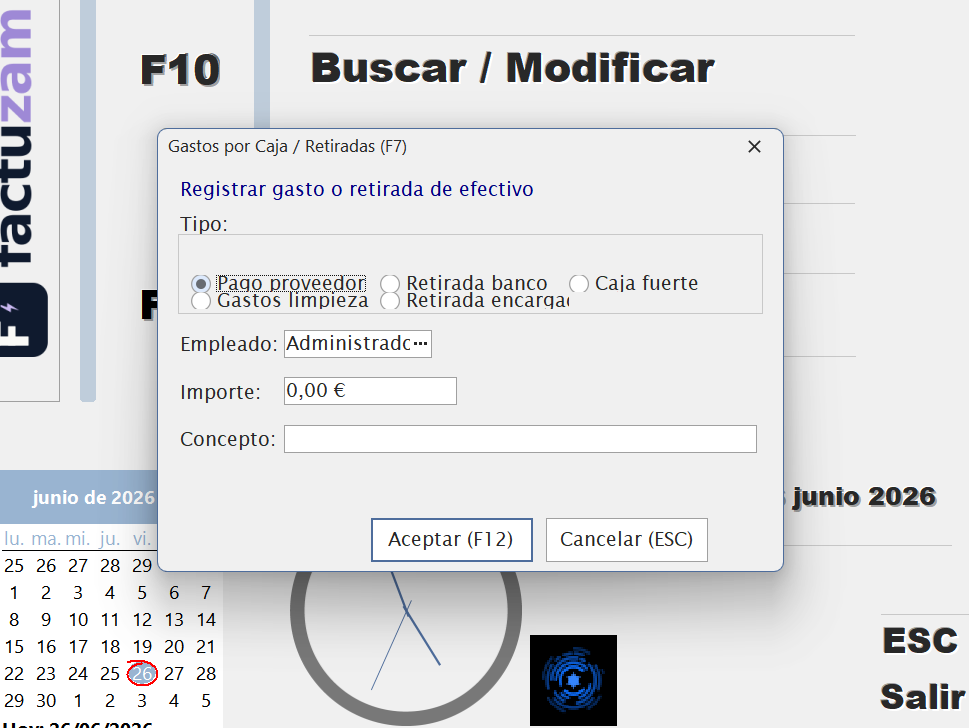
La pantalla permite clasificar la salida:
| Tipo | Cuándo usarlo |
|---|---|
| Pago proveedor | Pago puntual a un proveedor desde el cajón. |
| Gastos limpieza | Gastos menores pagados en efectivo. |
| Retirada banco | Dinero que se saca para ingresarlo en banco. |
| Retirada encargado | Entrega de efectivo al responsable. |
| Caja fuerte | Retirada para dejar efectivo fuera del cajón. |
Además pide Empleado, Importe y Concepto. Se acepta con F12. Estas salidas restan en Efectivo salidas y quedan auditadas en históricos.
Buscar / Modificar (F10)
Abre la pantalla «Buscar operaciones» para localizar cualquier operación de la caja y revisarla o corregirla.
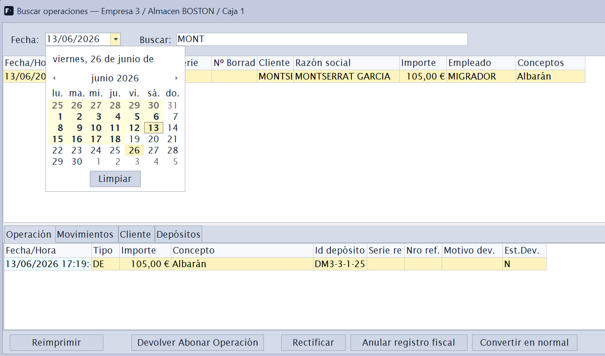
Filtros: Fecha de caja y campo Buscar (texto libre: cliente, importe, nº de documento…).
Rejilla de resultados: Fecha/Hora, Nº Operación, Tipos (venta, devolución, gasto, traspaso…), Serie y Nº Factura, Cliente y Razón social, Importe, Empleado y Conceptos.
Detalle de la operación seleccionada, en dos pestañas:
- Operación — tipo, importe, concepto, id de depósito, documento de referencia (serie/nº), y en devoluciones el motivo y su estado.
- Pagos — desglose por forma de pago: línea, código, forma de pago, Entregado, Cambio y Neto.
Según la operación también pueden aparecer pestañas de Vales, Movimientos, Cliente, Depósitos y Factura. Esta pantalla es la forma más rápida de reconstruir qué pasó con un ticket: qué se vendió, cómo se cobró, si hubo vale, si movió stock y qué documento fiscal quedó asociado.
Acciones habituales:
| Acción | Uso |
|---|---|
| Reimprimir | Saca el duplicado por la impresora de tickets configurada en parámetros. |
| Previsualizar | Abre la vista previa del ticket, desde la que se puede elegir otra impresora. |
| Envía por correo la documentación de la operación seleccionada. | |
| Rectificar | Abre una nueva operación para corregir el ticket por diferencias o mediante una rectificativa sustitutiva. |
| Anular registro fiscal | Solicita la anulación fiscal de un documento consolidado. |
| Convertir en normal | Convierte una factura simplificada en factura normal nominativa. |
| F5 | Recarga la consulta del día. |
| Esc | Cierra la búsqueda y vuelve al menú de caja. |
Requiere tener una caja seleccionada (empresa/almacén/caja); si no, la aplicación pide seleccionarla antes de buscar.
Rectificar un ticket: por diferencias o sustitutiva
Una venta ya consolidada no se modifica directamente. Para corregirla:
- Entra en TPV ▸ Buscar / Modificar (F10).
- Localiza la operación y comprueba el ticket en las pestañas de detalle.
- Pulsa Rectificar.
- Elige Por diferencias o Sustitutiva.
- Revisa la nueva operación que abre Factuzam, corrige sus líneas y finaliza el cobro con
[F12].
| Modalidad | Cómo se presenta | Cuándo usarla | Efecto en ventas y stock |
|---|---|---|---|
| Por diferencias | Carga las líneas originales en negativo. Puedes dejar solo las cantidades o conceptos que deban corregirse. | Devolución total/parcial, descuento omitido o diferencia concreta. | Conserva la venta original y añade la corrección. Las cantidades negativas compensan importes y movimientos de stock. |
| Sustitutiva | Carga el contenido en positivo para dejar la versión completa y correcta. | Cuando conviene reemplazar íntegramente el ticket por otro corregido. | La original queda sustituida y deja de computar como venta activa; la nueva aporta los importes y movimientos corregidos. |
Al cerrar la operación, Factuzam usa una serie rectificativa, enlaza el nuevo documento con el original y lo registra o encola según el modo fiscal. No se puede volver a rectificar un documento que ya es rectificativo.
Convertir en normal es un flujo distinto: se utiliza cuando el cliente pide una factura nominativa de su ticket, no para corregir importes. Para las diferencias fiscales entre estas acciones, consulta Acciones fiscales sobre una factura emitida.
Arqueo (F11)
El arqueo es el cierre y cuadre de la caja: calcula lo que debería haber en el cajón y lo compara con lo que se cuenta físicamente.
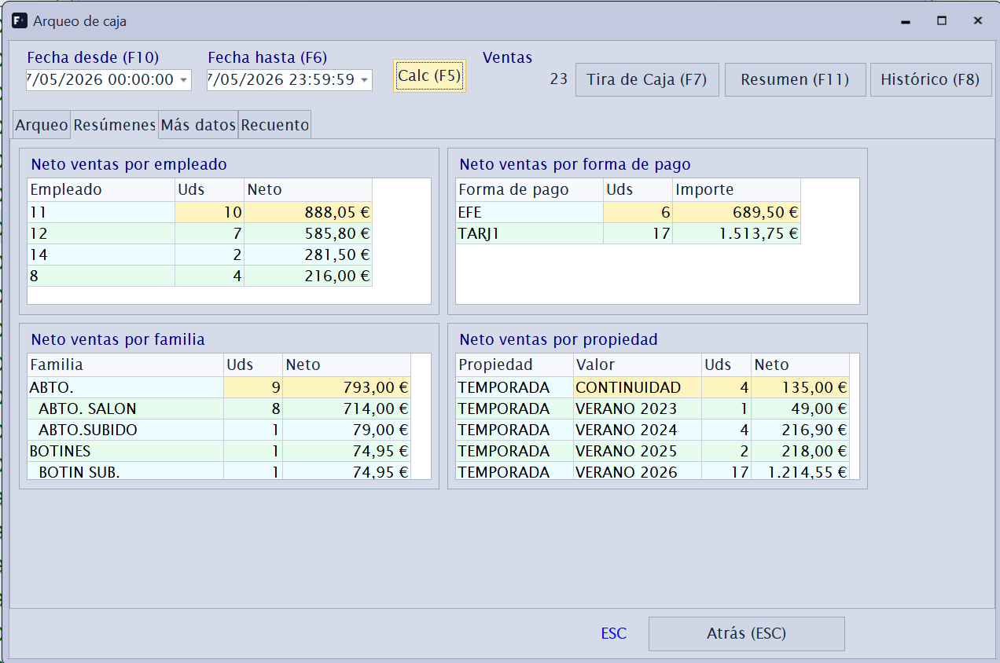
Periodo: se arquea entre Fecha desde (F10) y Fecha hasta (F6) (normalmente la jornada en curso).
El desglose en cascada muestra cómo se llega al saldo:
Líneas artículos + Bruto − Descuento = Bruto
Operaciones Ventas Normales + Ventas Préstamos
− Devoluciones = Total Ventas
Cobros − Vales recogidos + Vales emitidos
+ Cobros clientes − Pendiente cobro = Ingresos caja
Efectivo + Efectivo entradas − Efectivo salidas
+ Efectivo anterior = Efectivo en caja
+ Otros (tarjetas, bonos, divisa, cripto)
= Saldo a recontarPestaña «Resúmenes»: neto de ventas por empleado (unidades y neto) y por forma de pago (unidades e importe) — útil para comisiones y para cuadrar el datáfono.
Botones:
| Tecla | Función |
|---|---|
| F5 | Recalcular el arqueo tras cambiar fechas. |
| F11 | Resumen / imprimir el arqueo calculado. |
| F7 | Tira de Caja con detalle de tickets y movimientos. |
| F8 | Histórico de arqueos anteriores. |
| F2 | Grabar Arqueo desde la pestaña Recuento y, si está configurado, emitir el justificante. |
El botón Resumen (F11) emite el ticket de arqueo con el periodo, las operaciones, los totales de venta y cobro y los resúmenes por sección, temporada, empleado, forma de pago y serie.
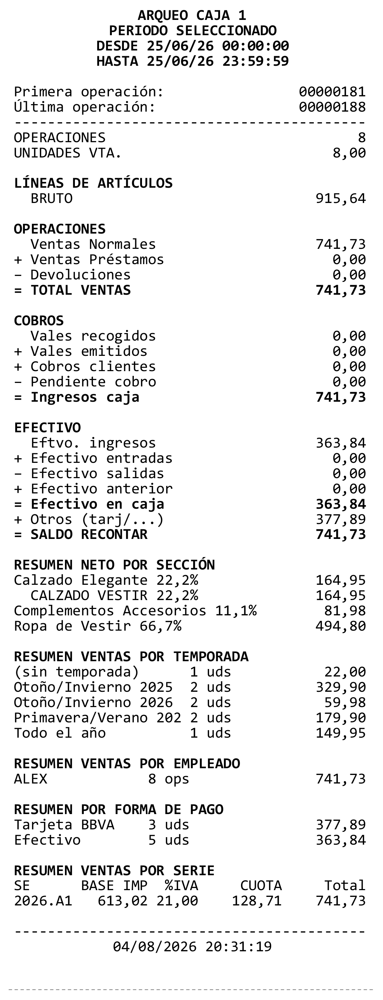
Haz el arqueo al cierre de cada jornada. El «Efectivo anterior» enlaza con el arqueo previo, de modo que los descuadres no se arrastran sin ser detectados.
Recuento del arqueo
La pestaña Recuento presenta una sola línea por forma de pago. El efectivo se introduce como un importe total, sin contar billetes y monedas por denominación.
| Zona | Qué se introduce |
|---|---|
| Efectivo | Importe total contado en el cajón. |
| Otras formas de pago | Importe recontado de tarjeta, bono, divisa, cripto u otras formas no efectivo. |
| Retirada | Importe retirado a banco, encargado o caja fuerte. |
| Dejo para mañana | Efectivo que queda como cambio para la siguiente jornada. Puede editarse si el parámetro correspondiente está activo; al cambiarlo se recalcula la retirada. |
| Observaciones | Aclaraciones sobre diferencias o incidencias. |
| Vendedor | Empleado responsable del cierre. |
La pantalla calcula Total sistema, Total recontado y Diferencia. Si la diferencia no es cero, conviene explicar el motivo en observaciones antes de grabar.
Con Permitir Arqueo de Tarjetas desactivado, la línea de efectivo muestra la propuesta del sistema y el usuario confirma el total en Recontado. Con el parámetro activado no se muestran las propuestas ni las diferencias de efectivo o tarjetas; el recuento se introduce sin esos totalizadores.
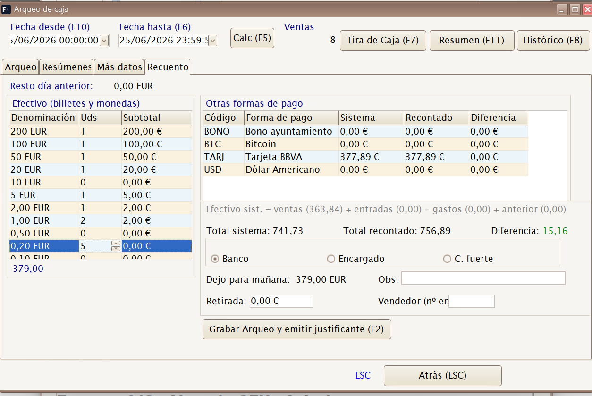
Tira de Caja (F7)
La Tira de Caja imprime o exporta un detalle de lo ocurrido en el rango del arqueo. Permite seleccionar series de facturas simplificadas y decidir si se incluyen traspasos salientes, ingresos por caja, gastos por caja y ventas a crédito.
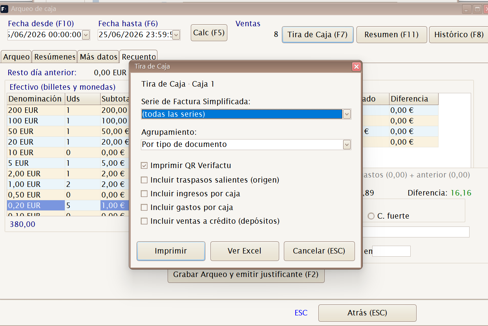
Imprimir genera la tira en formato de ticket, con el detalle de cada documento, su forma de pago y los totales del periodo.
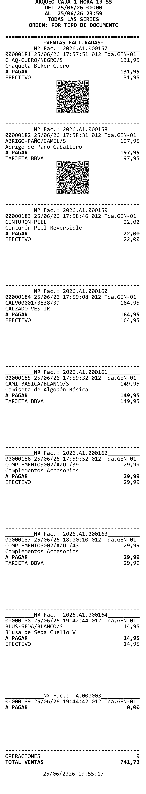
Ver Excel abre una previsualización tabular con cada documento y línea, SKU, descripción, cantidad, importe y subtotales. Desde esa vista se puede guardar el Excel si se necesita adjuntarlo o trabajarlo fuera de Factuzam.
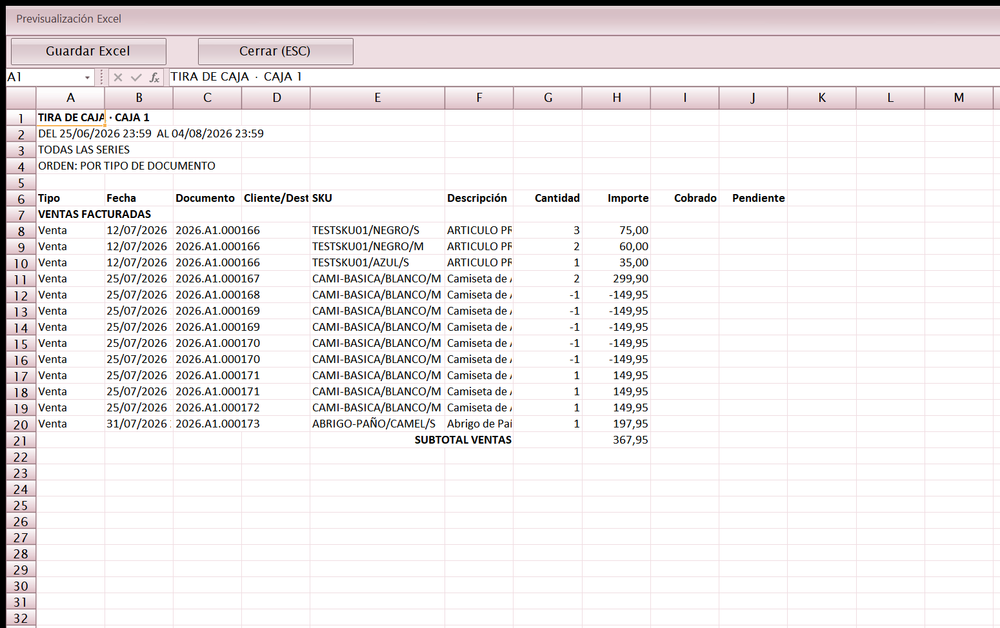
Úsala cuando el responsable quiera revisar el detalle antes del cierre o adjuntar una relación de movimientos al arqueo.
Desde Histórico (F8) puedes reimprimir duplicados del ticket de arqueo o del justificante de cierre ya grabado.
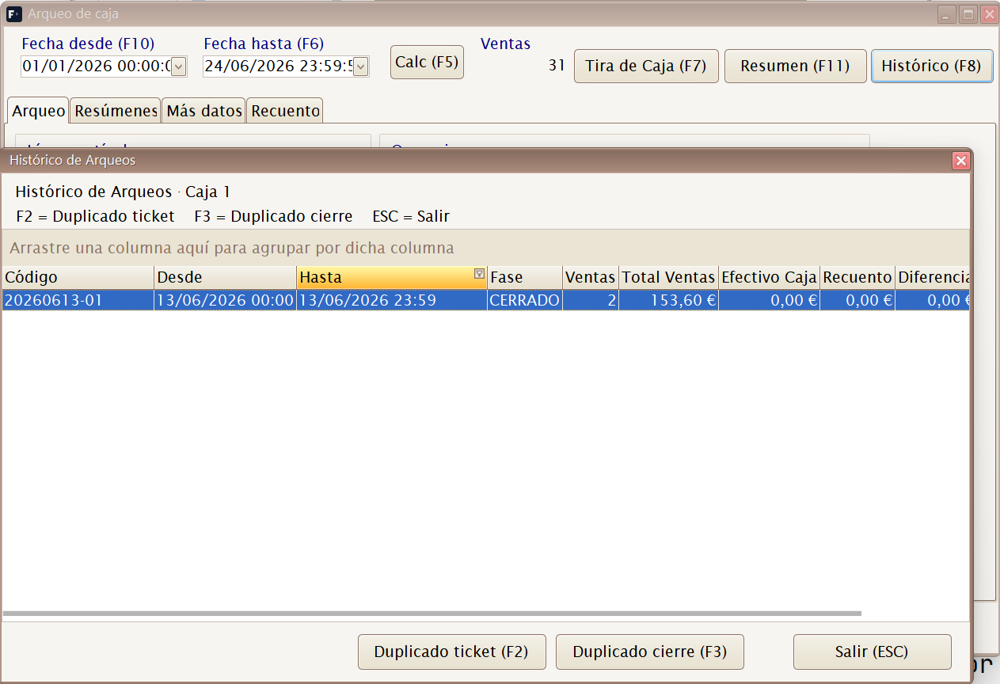
Parámetros de Caja
Atajo de menú: [Ctrl]+[F5]
Configuración del comportamiento del TPV: selector de caja, tarifa por defecto, empleado, validación de artículos, vales, lector de códigos, impresora, permisos operativos y resumen del arqueo. Normalmente lo configura el responsable al instalar la tienda.
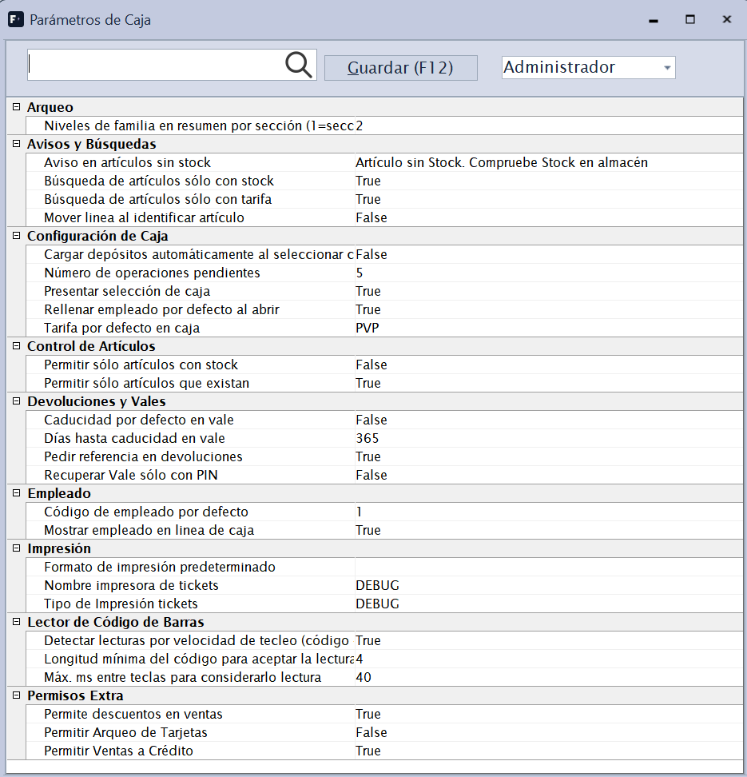
La parte superior tiene tres controles importantes:
| Control | Uso |
|---|---|
| Buscar | Filtra la lista de parámetros por texto. Sirve para localizar rápido impresora, stock, vale, descuento, etc. |
| Guardar (F12) | Graba solo los valores modificados del perfil elegido. |
| Usuario / Grupo / Todos | Permite cargar parámetros propios del usuario, del grupo o generales. Un usuario normal edita los suyos y los de su grupo; Todos queda en consulta salvo permisos de administrador. |
Los parámetros se leen con prioridad de usuario, grupo y valores por defecto. Cuando se guarda un cambio para el usuario o grupo actual, la caja recarga la configuración en memoria.
Control de Artículos
| Parámetro | Defecto | Qué controla |
|---|---|---|
Permitir sólo artículos que existan (vgerChkExistOnly) | True | Antes de vender un SKU comprueba que exista en fza_articulos_skus y que esté activo. Si no existe o está inactivo, la caja bloquea la línea y avisa al usuario. |
Permitir sólo artículos con stock (vgerChkStockOnly) | False | Si está activo, la caja no deja vender un SKU sin stock disponible. Si está desactivado, puede venderse, pero puede mostrarse el aviso configurado en Aviso en artículos sin stock. |
Uso recomendado:
| Situación | Configuración recomendada |
|---|---|
| Tienda con stock controlado por SKU | Existencia True, stock True. |
| Tienda en arranque o con servicios sin stock | Existencia True, stock False. |
| Carga inicial con artículos todavía incompletos | Revisar antes de desactivar existencia, porque permite errores de código. |
Configuración de Caja
| Parámetro | Defecto | Qué controla |
|---|---|---|
Presentar selección de caja (vgerShowCajaSelection) | False | Al entrar en Caja muestra el selector de empresa, almacén y caja. Si está desactivado, se usan los valores activos del entorno (oEmpresa, oAlmacen, oCaja). Doble clic sobre la cabecera de empresa vuelve a abrir el selector cuando está permitido. |
Rellenar empleado por defecto al abrir (vgerFillEmpleadoDefecto) | False | Al crear una venta o un traspaso rellena el empleado si no había empleado anterior. Usa el valor de Código de empleado por defecto. |
Tarifa por defecto en caja (vgerDefTarifa) | PVP | Tarifa inicial de una venta de contado. Al seleccionar cliente, puede cambiarse por la tarifa propia del cliente. |
Número de operaciones pendientes (vgerMaxOpPending) | 5 | Parámetro preparado para limitar o dimensionar operaciones pendientes. En la versión actual está registrado en la pantalla, pero no se ha localizado uso operativo directo en la caja. |
Cargar depósitos automáticamente al seleccionar cliente (vgerAutoLoadDepositos) | False | Si el cliente permite deuda y tiene depósitos, la caja carga sus depósitos pendientes al seleccionarlo. Si está desactivado, el usuario debe cargarlos con Cargar cta. (F2) desde la pantalla de Ventas. |
Ejemplo práctico: en una tienda con varias cajas físicas conviene activar Presentar selección de caja para evitar que un usuario facture desde la caja equivocada. En una tienda con un único TPV puede dejarse desactivado.
Devoluciones y Vales
| Parámetro | Defecto | Qué controla |
|---|---|---|
Pedir referencia en devoluciones (vgerReqRefDevolucion) | False | Parámetro preparado para exigir una referencia en devoluciones. En la versión actual está definido, pero no se ha localizado uso operativo directo en la fase de cobro. |
Recuperar Vale sólo con PIN (vgerRecuperaValePIN) | False | Al buscar un vale, muestra el campo PIN. Si el vale tiene PIN de seguridad, obliga a introducirlo para canjearlo. También filtra la búsqueda por PIN cuando se rellena. |
Caducidad por defecto en vale (vgerCaducidadDefVale) | False | Al seleccionar vales para canjear, oculta los caducados cuando está activo. Un vale sin fecha de caducidad sigue siendo válido. |
Días hasta caducidad en vale (vgerDiasCaducidadVale) | 365 | Parámetro preparado para calcular caducidad al emitir vales. En la versión actual está registrado, pero la emisión de vales no usa directamente este valor. |
Funcionamiento de vales en cobro:
| Caso | Comportamiento |
|---|---|
| El vale cubre parte de la venta | Se registra como forma de pago VALE con referencia al código del vale. |
| El vale es mayor que lo pendiente | Se canjea el vale completo y se emite automáticamente un vale nuevo por el exceso. |
| El vale no existe, está recogido o está anulado | La validación de cobro bloquea el cierre. |
| Caducidad activa | La búsqueda solo enseña vales pendientes no caducados. |
Avisos y Búsquedas
| Parámetro | Defecto | Qué controla |
|---|---|---|
Aviso en artículos sin stock (vgerAvisoStockWarning) | Artículo sin stock. Compruebe stock en almacén. | Texto que se muestra cuando se detecta falta de stock y no se bloquea la venta por Permitir sólo artículos con stock. Si se deja vacío, no se muestra aviso informativo. |
Búsqueda de artículos sólo con stock (vgerBusqArtStockOnly) | False | Parámetro preparado para filtrar búsquedas por stock. En la versión actual la búsqueda de artículos de caja filtra por tarifa y vigencia, pero no aplica esta clave directamente. |
Búsqueda de artículos sólo con tarifa (vgerBusqArtTarifaOnly) | False | Parámetro preparado para filtrar búsquedas solo con tarifa. En la versión actual la búsqueda permite artículos de la tarifa activa o sin tarifa asociada. |
Mover línea al identificar artículo (vgerMoverLineaIdentif) | False | Decide el salto de foco al identificar un artículo. Si está activo, la caja guarda la línea y abre una nueva línea en Artículo. Si está desactivado, deja el foco en la descripción o en atributos para completar la línea. |
Este bloque afecta sobre todo al ritmo de venta:
| Forma de trabajar | Ajuste útil |
|---|---|
| Venta rápida con lector y SKU completos | Activar Mover línea al identificar artículo. |
| Venta con artículos que requieren atributos manuales | Desactivar Mover línea al identificar artículo. |
| Se permite vender sin stock, pero se quiere advertir | Stock False y aviso de stock con texto. |
Lector de Código de Barras
| Parámetro | Defecto | Qué controla |
|---|---|---|
Detectar lecturas por velocidad de tecleo (código + CR) (vgerScanVelActivo) | True | Activa el detector que diferencia una lectura de escáner de una entrada manual por teclado. |
Máx. ms entre teclas para considerarlo lectura (vgerScanVelMs) | 40 | Umbral de velocidad entre caracteres. Si el escáner escribe más lento que este valor, puede interpretarse como tecleo normal. |
Longitud mínima del código para aceptar la lectura (vgerScanMinLong) | 4 | Evita tratar textos muy cortos como códigos escaneados. |
Si el lector no dispara la búsqueda automática, revisa primero Detectar lecturas por velocidad de tecleo y sube ligeramente el umbral de milisegundos. Si se producen falsas lecturas al teclear, baja el umbral o sube la longitud mínima.
Impresión
| Parámetro | Defecto | Qué controla |
|---|---|---|
Nombre impresora de tickets (vgerDefPrinter) | vacío | Impresora térmica usada por los tickets y por la apertura de cajón. La lista permite elegir entre impresoras instaladas. Si no hay impresora válida o queda en DEBUG, la apertura de cajón no se ejecuta y se avisa al usuario. |
Tipo de Impresión tickets (vgerTipoImpresion) | ESC POS | Modo de impresión disponible en el selector: ESC POS, ESC POS NOQR, EDITOR o DEBUG. En la versión actual se almacena como parámetro, pero la generación principal de tickets usa la impresora asignada. |
Formato de impresión predeterminado (vgerFormatoImpPredet) | vacío | Parámetro reservado para indicar un formato predeterminado. En la versión actual está registrado, pero no se ha localizado uso operativo directo en caja. |
Notas de soporte:
| Valor | Cuándo usarlo |
|---|---|
ESC POS | Ticket térmico normal con comandos de impresora. |
ESC POS NOQR | Variante prevista para tickets sin QR cuando el formato lo soporte. |
EDITOR | Modo de edición o pruebas de formato. |
DEBUG | Pruebas sin impresora real. No sirve para abrir cajón. |
Empleado
| Parámetro | Defecto | Qué controla |
|---|---|---|
Código de empleado por defecto (vgerCodEmpleadoDefecto) | vacío | Código que se rellena al abrir venta o traspaso si Rellenar empleado por defecto al abrir está activo. |
Mostrar empleado en linea de caja (vgerShowEmpleadoLinea) | True | Muestra u oculta la columna de empleado en la línea de venta. Si se oculta, la línea sigue pudiendo llevar el vendedor asignado por cabecera o por defecto. |
En tiendas con comisiones por vendedor conviene dejar visible la columna de empleado. En tiendas de autoservicio con un solo cajero puede ocultarse para ganar espacio en la rejilla.
Permisos Extra
| Parámetro | Defecto | Qué controla |
|---|---|---|
Permitir Arqueo de Tarjetas (vgerArqueoTarjetas) | False | Con False, muestra las propuestas del sistema, incluido el efectivo total en una sola línea. Con True, oculta las propuestas y diferencias de efectivo y tarjetas para introducir el recuento sin totalizadores. |
Permitir Ventas a Crédito (vgerVentasCredito) | True | Habilita el botón Préstamo (F7) en la fase de cobro, siempre que haya cliente, el cliente permita deuda y quede importe pendiente para dejar en cuenta. |
Permite descuentos en ventas (vgerDescuentos) | True | Permite editar descuentos de línea, descuento global, total y precio unitario. Si está desactivado, esas vías quedan bloqueadas para evitar descuentos indirectos. |
La venta a crédito no depende solo del parámetro: también exige cliente identificado, permiso de deuda en la ficha del cliente y validación de límite de crédito.
Arqueo
| Parámetro | Defecto | Qué controla |
|---|---|---|
Niveles de familia en resumen por sección (vgerArqueoNivelesFamilia) | 2 | Define cuántos niveles de la ruta de familias aparecen en el resumen por sección del arqueo y en el ticket de arqueo. 1 muestra solo la sección raíz; 2 sección y familia; 3 añade subfamilia. El sistema sanea el valor al rango 1..9. |
Permitir editar el cambio dejado para la siguiente jornada (vgerArqueoEditarCambio) | False | Permite introducir directamente el importe de Dejo para mañana. La retirada se recalcula para que retirada y cambio dejado coincidan con el efectivo recontado. |
Emitir justificante al grabar el cierre (vgerArqueoEmitirJustificante) | True | Con False, después de grabar el arqueo se pregunta si se desea imprimir el justificante del cierre. Los duplicados siguen disponibles desde el histórico. |
Usa pocos niveles si el arqueo debe ser rápido y legible. Sube los niveles cuando se necesite analizar la venta por familias más concretas.
Cambiar parámetros durante la jornada puede alterar el comportamiento de las nuevas operaciones y tickets, pero no modifica operaciones ya grabadas. Para evitar confusiones, cambia impresora, caja, stock o descuentos antes de abrir la jornada o después de cerrar el arqueo.
Formas de Pago Caja
Atajo de menú: [Shift]+[Ctrl]+[Q]
Define las formas de pago admitidas en el TPV y cómo se comporta cada una en el cobro y en el arqueo.
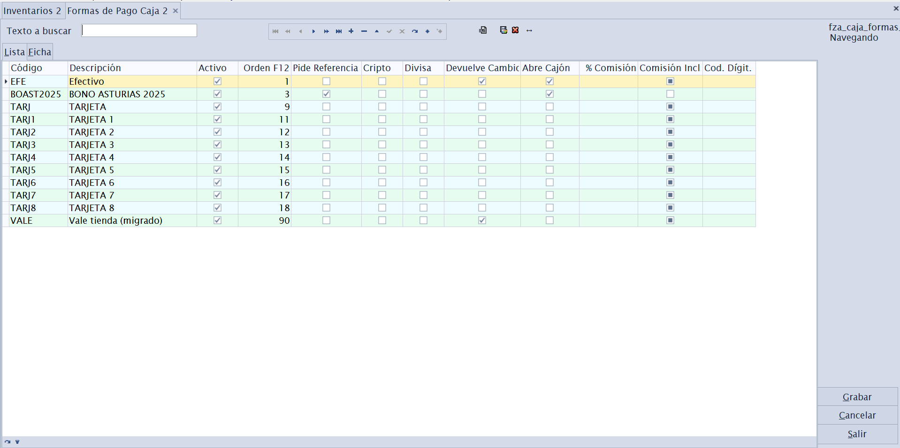
Campos de cada forma de pago:
| Campo | Descripción |
|---|---|
| Código / Descripción / Activo | Identificación de la forma de pago. |
| Orden F12 | Posición en la pantalla de cobro (la primera es la que se propone al pulsar F12). |
| Pide Referencia | Al cobrar exige una referencia (nº de bono, autorización de tarjeta…). |
| Devuelve Cambio | Permite dar cambio (típico del efectivo; una tarjeta no lo permite). |
| Abre Cajón | Abre el cajón portamonedas al cobrar. |
| % Comisión / Comisión Incl. | Comisión de la forma de pago (p. ej. TPV bancario) y si está incluida. |
| Divisa | Es una moneda extranjera (USD, GBP…). |
| Cripto / Red y Hash Blockchain | Es una criptomoneda; registra la red y el hash de la transacción. |
En el arqueo, las formas que no son efectivo se agrupan en «Otros (tarjetas, bonos, divisa, cripto)» para el recuento.
Configuración recomendada:
| Forma | Recomendación |
|---|---|
| Efectivo | Activar Devuelve Cambio y Abre Cajón. |
| Tarjeta | Activar Pide Referencia si se quiere guardar autorización; no debe devolver cambio. |
| Vale | Usar la gestión propia de vales desde Buscar Vale (F6). |
| Divisa | Marcar Divisa para pedir cotización e importe equivalente. |
| Cripto | Marcar Cripto y definir red/hash para trazabilidad. |
Depósitos de Clientes
Atajo de menú: [Ctrl]+[D]
Gestiona los depósitos/anticipos de clientes: prendas apartadas y dinero entregado a cuenta (señales, reservas) que luego se aplica a una venta (tecla F2 Cargar cta. en el TPV). Lleva el saldo disponible por cliente.
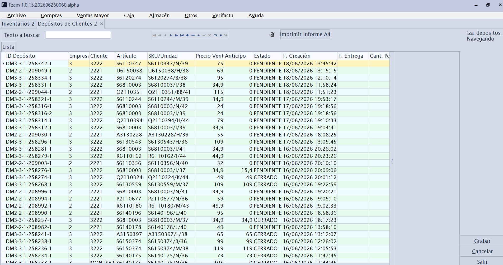
Columnas principales:
| Campo | Qué indica |
|---|---|
| ID Depósito | Identificador interno del depósito. |
| Cliente | Cliente propietario de la señal o prenda apartada. |
| Artículo / SKU | Prenda reservada, con talla/color si procede. |
| Precio Venta | Precio total previsto para la entrega. |
| Anticipo | Importe ya pagado por el cliente. |
| Estado | PENDIENTE mientras la prenda sigue apartada; al entregarse o cancelarse, el depósito queda CERRADO. |
| Cant. Pendiente | Unidades que quedan pendientes de entregar o regularizar. |
Los depósitos no se teclean aquí: nacen y se cierran solos desde el TPV, y esta pantalla es su consulta y auditoría:
| Momento | Qué ocurre con el depósito |
|---|---|
| Cobro parcial en caja | La prenda no cubierta del todo se convierte en depósito PENDIENTE, con lo entregado como anticipo (o anticipo 0 si solo se aparta). |
| F2 Cargar cta. + cobro | La prenda apartada se cobra (descontando su anticipo) y el depósito pasa a CERRADO. Si se entrega menos, el anticipo aumenta y sigue PENDIENTE. |
| F2 + cantidad en negativo | El depósito se cancela: la prenda no se cobra y el anticipo se recupera como saldo a favor en ese cobro. |
Desde caja se trabaja con la cuenta del cliente de dos formas:
| Acción | Efecto |
|---|---|
| Cargar cta. (F2) | Lleva los depósitos del cliente al ticket para cobrarlos, aumentar el anticipo o cancelarlos. |
| Préstamo (F7) | Deja pendiente de cobro en cuenta si el cliente tiene crédito permitido. |
Depósito y préstamo no son lo mismo. El depósito es dinero/prenda ya registrada a cuenta. El préstamo es una venta que se cierra dejando deuda.
Histórico de Pagos de Caja
Atajo de menú: [Shift]+[Ctrl]+[J]
Consulta de todos los cobros y pagos registrados en la caja, con sus formas de pago e importes. Permite filtrar por fechas y revisar el detalle del efectivo movido.
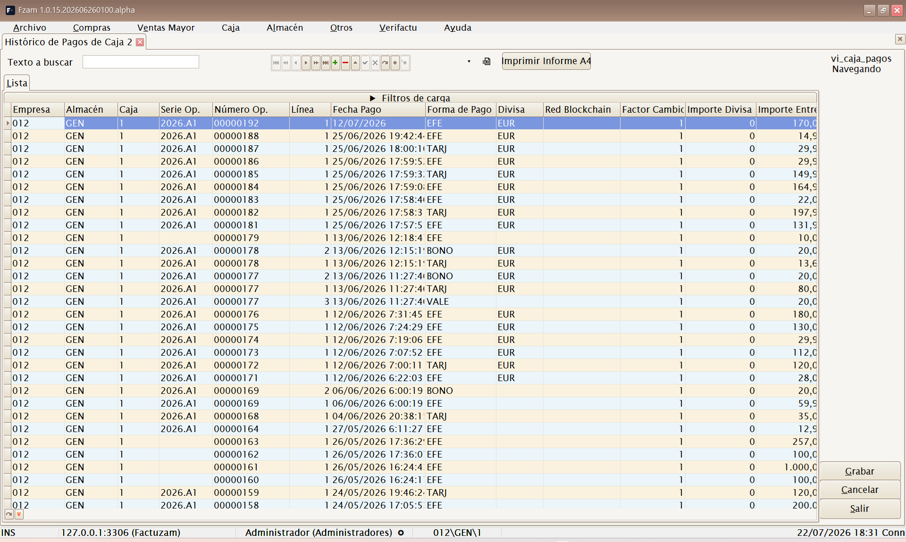
Incluye empresa, almacén, caja, serie y número de operación, línea, fecha, forma de pago, divisa, referencia, importe entregado, cambio y observaciones. Es la pantalla adecuada para comprobar por qué el datáfono o el efectivo no cuadran con el arqueo.
Histórico de Vales
Atajo de menú: [Shift]+[Ctrl]+[V]
Consulta de los vales emitidos (por devoluciones de cliente sin reembolso en efectivo) y su estado (pendiente, canjeado, caducado).
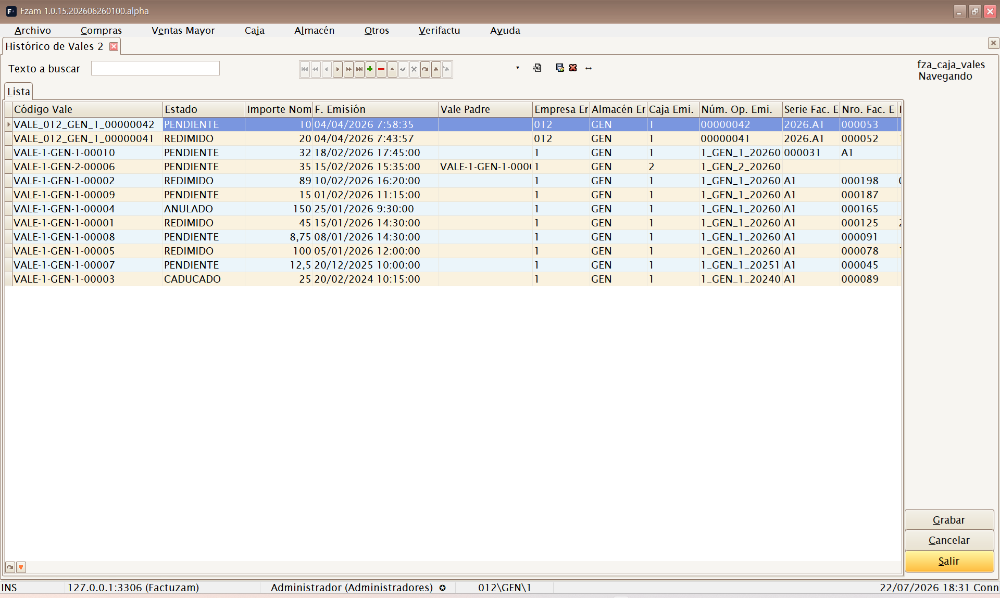
Muestra el código del vale, estado, importe nominal, fecha de emisión, caducidad, PIN si existe, operación de emisión y operación de redención. Sirve para saber si un vale está pendiente, si ya se usó y en qué caja se canjeó.
Histórico de Operaciones
Atajo de menú: [Shift]+[Ctrl]+[O]
Consulta del registro completo de operaciones del TPV: ventas, devoluciones, entradas de cambio, gastos, traspasos… con su trazabilidad. Es la vista de auditoría de la actividad de caja.
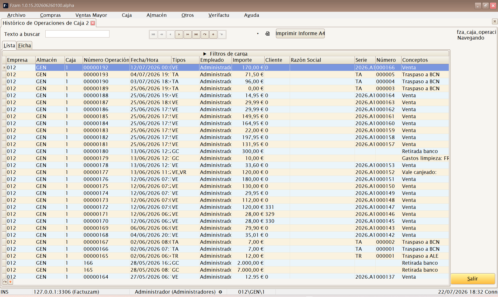
No es la pantalla de venta diaria, sino una consulta administrativa. Permite revisar por años y almacenes, localizar operaciones por cliente, número, importe o concepto, e ir al borrador simplificado asociado cuando exista.
Histórico de Arqueos
Atajo de menú: [Shift]+[Ctrl]+[A]
Consulta de los arqueos (cierres de caja) realizados: efectivo contado, descuadres, fecha, usuario. Permite revisar el cuadre de cada jornada. También accesible desde el propio arqueo con F8.
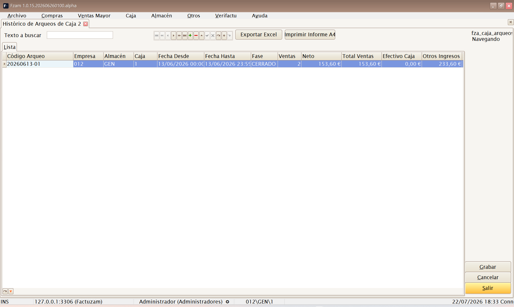
Incluye el botón Imprimir Informe A4, que genera un informe horizontal por empresa, almacén, caja y rango de fechas. El formato se puede editar y guardar desde el diseñador de informes.
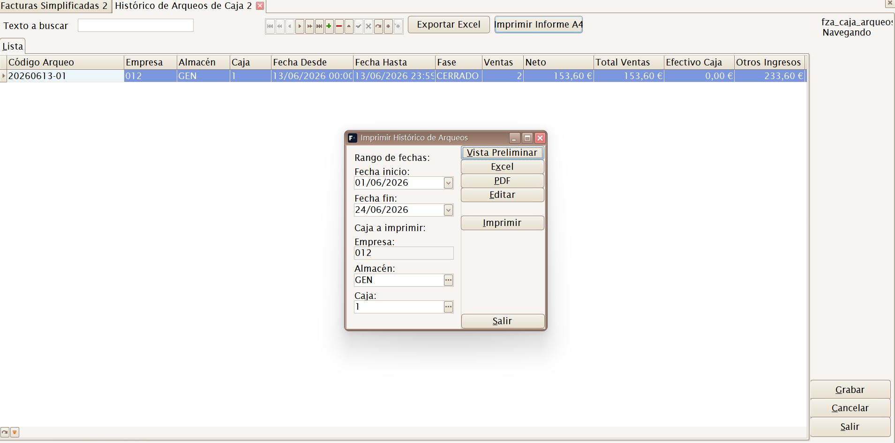
En el histórico del propio TPV se pueden sacar dos duplicados:
| Botón | Documento |
|---|---|
| Duplicado ticket (F2) | Reimprime el resumen del arqueo. |
| Duplicado cierre (F3) | Reimprime el justificante de cierre grabado. |
Histórico de Solicitudes de Traspaso
Ruta: TPV ▸ Histórico de Solicitudes de Traspaso
Reúne las solicitudes creadas con Solicitar a otro almacén (F6) y permite seguirlas hasta su atención. La lista muestra origen y destino, empleado, estado, cantidades pedidas, servidas y no servidas, líneas pendientes y motivos de rechazo.
La ficha separa los Artículos solicitados del Traspaso realizado. Si la solicitud ya generó uno o varios traspasos, se pueden revisar sus datos y los movimientos de stock asociados. El botón Listado solicitudes prepara la consulta por fechas, ubicaciones y estados y permite obtenerla en Excel.
El histórico no permite crear ni borrar solicitudes. Solo un administrador que además tenga permiso de modificación puede corregir el empleado o las observaciones; el estado, las cantidades y la trazabilidad del traspaso no se editan manualmente.
Borradores Simplificados
Atajo de menú: [Shift]+[Ctrl]+[F]
Mantenimiento de los Borradores Simplificados (tickets) generados en caja. Permite consultarlos, reimprimirlos y, cuando proceda, convertir un ticket en borrador normal a nombre del cliente. Como el resto de documentos de venta, se consolidan según el modo fiscal configurado.
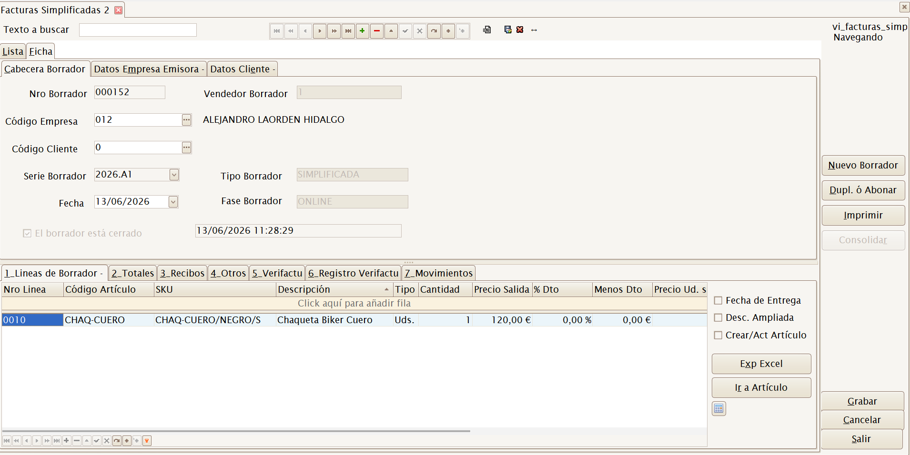
Usos habituales:
| Acción | Cuándo usarla |
|---|---|
| Consultar ticket | Revisar líneas, IVA, importes y cliente de una venta de caja. |
| Reimprimir | Sacar duplicado del ticket si el cliente lo solicita. |
| Convertir a borrador normal | Cuando el cliente necesita documento nominativo después de la venta. |
| Revisar estado fiscal | Comprobar si el ticket está pendiente, consolidado o relacionado con Verifactu. |
Si el cliente pide factura nominativa en el momento de cobrar, lo correcto es usar Borrador (F8) en la fase de cobro. La conversión posterior queda para casos en los que el ticket ya se cerró.
Facturas proforma
Ruta: TPV ▸ Facturas proforma
Genera documentos por periodo a partir de operaciones ya cerradas del TPV y mantiene un historial de lo procesado. Se indica Desde, Hasta y la empresa emisora; para traspasos se selecciona también la empresa destino.
| Modalidad | Resultado |
|---|---|
| Ventas (VE): proforma interna no fiscal | Agrupa operaciones de VENTA CONTADO en una proforma interna. No declara IVA ni se comunica a Verifactu. |
| Traspasos (TA): borrador fiscal de Venta mayor | Genera borradores normales por los traspasos entre empresas. El IVA y Verifactu se declaran cuando esos borradores se consolidan desde Venta Mayor. |
Generar documentos revisa antes el periodo y avisa si está duplicado o se solapa con otro. Las operaciones que ya quedaron vinculadas no se vuelven a incluir; las rectificaciones posteriores se incorporan como ajustes. Refrescar historial actualiza la lista. Imprimir selección imprime las proformas VE; los borradores TA se consultan e imprimen desde Venta Mayor.